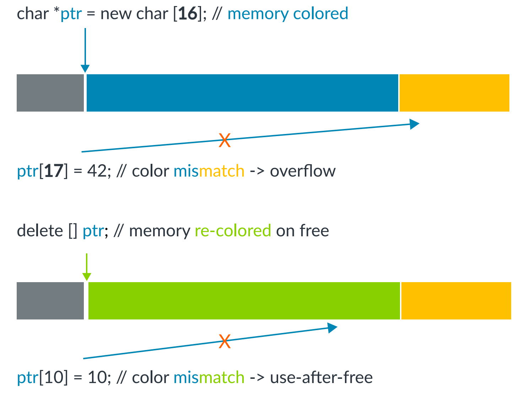

秋冬学期 Final Project 列表与要求
1.1 利用eBPF实现对Linux内核的Rootkit实战
背景： eBPF（Extended Berkeley Packet Filter）是Linux内核在3.18版本引入的一项革命性技术。它允许用户在不修改内核源码或加载内核模块的情况下，动态地在内核中加载并执行用户自定义的扩展程序。eBPF依靠即时编译（JIT）技术和严格的静态验证机制（Verifier）来保障这些程序的安全运行。起初，它主要应用于网络数据包的过滤，但如今，其应用范围已经拓展到性能分析、安全监控等多个领域。然而，eBPF的强大功能也可能被攻击者所利用：它能够修改用户空间的内存，hook具有挂载点的内核函数，可被利用来更方便的实现Rootkit。同时，如果Verifier存在漏洞或配置不当，也可能导致内核提权或逃逸。
描述： 利用BPF实现rootkit，对cron无感知地插入后门，可以执行任意命令或向攻击方发起反向连接，并设计利用BPF的，对BPF恶意利用的检测系统框架(基于规则的面向BPF syscall的检测，如非预期用户挂载了敏感类型探针)
里程碑：
- 理解内核中BPF的作用原理，收集2种已有的eBPF rootkit，阐述其原理（综述）。
- 扩展已有eBPF rootkit，实现2种新功能（实现）。
中期（第11周）完成：综述
期末（第16周）完成：实现
参考文档：
- What is eBPF？
- BPF and XDP Reference Guide
- Warping Reality - creating and countering the next generation of Linux rootkits using eBPF
- With Friends Like eBPF, Who Needs Enemies?
- 内核态eBPF程序实现容器逃逸与隐藏账号rootkit
1.2 eBPF的Verify模块的漏洞发现与利用
背景：同上
描述： eBPF Verifier是Linux内核安全的关键组件，程序在加载之前必须经过Verifier验证，Verifier会检查每个可能执行的程序指令序列，在确保满足所有eBPF安全假设后方可执行。虽然验证器的代码已经经过了层层审查，但随着 eBPF 中不断添加新功能以及Verifier自身功能的复杂性，其中难免存在漏洞，一旦被恶意利用，极可能引发严重后果。
里程碑：
- 了解Verifier的功能和实现方式，解释Verifier的复杂性以及其中可能存在的漏洞（综述）。
- 实战利用2~3个Verifier漏洞，实现系统提权、容器逃逸、系统奔溃等任意两个攻击（实现）。
- （选做）对已有eBPF的自动化漏洞发现程序的复现和改进，尝试发现新的漏洞。
中期（第11周）完成：综述
期末（第16周）完成：实现
参考文档：
- What is eBPF？
- BPF and XDP Reference Guide
- Warping Reality - creating and countering the next generation of Linux rootkits using eBPF
- Hao Sun, Yiru Xu, Jianzhong Liu, Yuheng Shen, Nan Guan, and Yu Jiang. 2024. Finding Correctness Bugs in eBPF Verifier with Structured and Sanitized Program.
- Chaoyuan Peng, Muhui Jiang, Lei Wu, and Yajin Zhou. 2024. Toss a Fault to BpfChecker: Revealing Implementation Flaws for eBPF runtimes with Differential Fuzzing.
2. 仓库级漏洞检测（Repository-level Vulnerability Detection）
背景：
真实漏洞往往跨越多个文件和调用链。只对单个函数做二分类，容易遗漏调用方、被调用方和配置上下文，也难以判断模型能否区分漏洞版本与修复版本。本项目关注给定仓库版本与待检查改动时的漏洞检测与定位。
描述：
从公开的仓库级漏洞数据集中选取可复现样本，固定仓库 commit 和依赖版本，比较三种方法：只看目标函数的 baseline、检索调用关系及相关文件的上下文增强方法、按需读取代码和调用工具的 agent 方法。报告漏洞判断及根因定位结果，分析上下文选择、误报和成本。可以使用现成模型或 API，不要求从零训练大模型。
里程碑：
- 中期：调研至少 3 篇相关工作，确定数据集、样本筛选规则、漏洞与修复版本的划分、评价指标；完成 baseline 和可运行的评测脚本。
- 期末：在同一批样本上比较 baseline、上下文检索和 agent/tool-assisted 方法；至少覆盖 30 组漏洞/修复配对样本，输出检测指标、定位准确率、误报案例、token/tool-call 与运行成本，并对失败案例作根因分析。样本量不足时须事先说明筛选原因。
中期（第11周）完成：综述、数据与 baseline。 期末（第16周）完成：方法比较、实验与分析。
提交仓库 commit、样本清单、提示词/配置、运行脚本和原始结果；训练集与测试集须按仓库或时间隔离，并检查重复样本，避免数据泄漏。
参考文档：
3.Android应用抗加固分析
背景： 随着Android应用的广泛使用，开发者为了保护其应用的知识产权和防止被分析，通常会采用加固技术，例如加壳、代码混淆、环境检测等技术。这些技术使得应用的逆向工程和动态分析变得困难，从而增加了安全分析的复杂性。然而，这些技术也可能被恶意应用利用，以逃避安全检测。因此，研究如何检测和对抗这些抗分析技术对于提升Android应用的安全性至关重要。
描述： 本项目旨在使同学们了解Android应用分析技术，深入探究Android应用分析中的抗加固技术。
里程碑：
- 了解常见的代码混淆、加壳、环境检测等技术及其实现原理；
- （二选一）复现一个现有的去混淆、脱壳或环境对抗的工作（复现）；
- （二选一）实现一个能够检测Android应用使用了哪些加固技术的工具（实现）。
中期（第11周）完成 ：1
期末 （第16周） 完成：2或3
参考文档：
- Xue, L.; Zhou, H.; Luo, X.; Zhou, Y.; Shi, Y.; Gu, G.; Zhang, F.; Au, M. H. Happer: Unpacking Android Apps via a Hardware-Assisted Approach. In 2021 IEEE Symposium on Security and Privacy (SP); IEEE: San Francisco, CA, USA, 2021; pp 1641–1658. https://doi.org/10.1109/SP40001.2021.00105.
- Xue, L.; Zhou, H.; Luo, X.; Yu, L.; Wu, D.; Zhou, Y.; Ma, X. PackerGrind: An Adaptive Unpacking System for Android Apps. IIEEE Trans. Software Eng.2022, 48 (2), 551–570. https://doi.org/10.1109/TSE.2020.2996433.
- Kondracki, B.; Azad, B. A.; Miramirkhani, N.; Nikiforakis, N. The Droid Is in the Details: Environment-Aware Evasion of Android Sandboxes. In Proceedings 2022 Network and Distributed System Security Symposium; Internet Society: San Diego, CA, USA, 2022. https://doi.org/10.14722/ndss.2022.23056.
- Gao, C.; Cai, M.; Yin, S.; Huang, G.; Li, H.; Yuan, W.; Luo, X. Obfuscation-Resilient Android Malware Analysis Based on Complementary Features. IEEE Trans.Inform.Forensic Secur. 2023, 18, 5056–5068. https://doi.org/10.1109/TIFS.2023.3302509.
4.Rust/C跨语言调用分析
背景：Rust通常用于比较底层的项目，与C的语言规范相近，因此开发者为避免重写代码会重用C代码，因此会使用跨语言调用机制。如果C语言部分存在问题，或者跨语言接口抽象存在问题，都是难以修复或者滞后修复的。
描述：因此我们需要分析Rust生态中的library以及面向用户的Rust应用使用跨语言调用的情况，找到真实的CVE，同时设计PoC对CVE进行利用，并给出防护思路。
里程碑：
中期（第11周）完成：综述、PoC实现
期末（第16周）完成：多个PoC，防护思路
参考文档：
- Cross-Language Attacks, NDSS 22
5.支持多种处理器架构的MCU Rehosting框架
背景： 大多数rehosting框架只支持ARM或x86等常见架构，但在一些特定场景下，有许多非常规架构的固件。例如智能互联网汽车的场景中，有C166，RH850，V850，SH-2A等汽车固件中的特定架构。如何针对这些架构的MCU进行rehosting具有挑战性，也同时是一项研究重点。描述:本项目旨在使同学们深入理解不同架构的MCU如何rehosting，学习和了解architecture-agnostic的MCU rehosting的框架，并在此基础上对固件进行动态分析，例如fuzzing。
描述：
- Chen Z等人通过构建新的rehosting框架，突破了传统模拟器（如QEMU）不支持非主流芯片架构的限制，实现了对相关固件的动态分析和测试。于颖超等人对嵌入式设备固件的安全分析技术和相关工作进行了系统性的分类和介绍。请阅读相关论文，搜索更多相关文献，并撰写一篇关于MCU rehosting的简单但要点齐全的综述。
- Feng B等人通过外设-接口建模技术，摆脱了MCU固件运行需要依赖多个硬件外设的限制条件，实现了MCU固件的rehosting和动态分析，并发现多个漏洞。请阅读相关论文并进行复现，并发现至少一个crash。
- 实现对附件固件goodwatch.elf(MCU msp430)的rehosting，并记录运行日志。（该固件由助教提供）
- （附加）对附件固件进行动态调试或模糊测试，并尝试进行漏洞挖掘。
里程碑：
中期（第11周）完成1
期末（第16周）完成2、3
参考文档：
- Feng B, Mera A, Lu L. {P2IM}: Scalable and hardware-independent firmware testing via automatic peripheral interface modeling[C]//29th USENIX Security Symposium (USENIX Security 20). 2020: 1237-1254.
- Chen Z, Thomas S L, Garcia F D. Metaemu: An architecture agnostic rehosting framework for automotive firmware[C]//Proceedings of the 2022 ACM SIGSAC Conference on Computer and Communications Security. 2022: 515-529.
- 于颖超, 陈左宁, 甘水滔, 等. 嵌入式设备固件安全分析技术研究[J]. 计算机学报, 2021.
6. 安全编码智能体评测（Secure Coding Agent Evaluation）
背景：
编程智能体可以在多文件仓库中读取代码、修改文件并运行测试，但功能测试通过不等于修改安全。真实软件任务需要同时检验功能正确性和安全性，并分析智能体在什么条件下引入漏洞。
描述：
选用公开的多文件软件维护任务或现有安全编码基准，固定仓库版本、任务描述、可用工具和运行预算。为每个任务准备功能 oracle（测试预期功能）与安全 oracle（测试已知危险行为或安全不变量），在隔离环境中比较纯 LLM 与可调用工具的 coding agent。重点分析“功能通过但安全失败”的提交，而不是自行发明一个单一分数。
里程碑：
- 中期：调研至少 3 篇安全编码或编程智能体评测工作，选取至少 8 个可复现的仓库任务，完成两个 oracle、隔离运行环境和一个 baseline。
- 期末：在相同任务、模型版本和 token/tool-call 上限下比较纯 LLM 与 coding agent；分别统计功能通过率、安全通过率、两者同时通过率及运行成本；分析至少 3 个成功但不安全或任务失败的案例，记录可观察的工具调用和文件改动轨迹。
中期（第11周）完成：综述、任务和 oracle。 期末（第16周）完成：对照实验、结果与失败分析。
提交任务/仓库 commit 清单、两个 oracle 的源码、模型与 agent 版本、提示词与配置、预算、运行脚本及原始结果。
参考文档：
- SecureVibeBench: Benchmarking Secure Vibe Coding of AI Agents via Reconstructing Vulnerability-Introducing Scenarios (ACL 2026)
- SecureVibeBench 开源任务与评测代码
7.基于MTE的内存完整性保护
背景： 内存损坏漏洞仍然是最常见且后果最严重的漏洞之一，它既包括栈溢出、堆溢出等空间维度上的漏洞，也包括重复释放（Double-free）和释放后使用（Use-after-free）等时间维度上的漏洞。硬件厂商提出了不同种类的硬件支持来高效地缓解内存损坏漏洞，而Memory Tagging Extension（MTE）就是其中之一。
Arm在2019年发布的ARMv8.5硬件规范中首次提出了MTE，它用4个比特位对每16字节的内存进行着色，而指针的高位同样有4个比特位标记指针的颜色。如此，只有当指针颜色和内存颜色一致时访存操作才是合法的。

如上图所示，MTE同时能防护时空两个维度上的内存损坏漏洞，因此近年来受到工业界和学术界的广泛关注。然而，目前还缺乏可行的基于MTE的对内核内存进行实时保护的方法，由于内核安全的重要性和MTE硬件提供的高性能安全能力，如何将二者有机结合已经成为近年来研究的关注焦点。
描述： 本项目旨在使同学们入门硬件辅助安全（Hardware-assisted security）这一热门领域，同时深入了解MTE这一新兴的硬件安全特性。
里程碑：
- 阅读参考文档并收集更多的相关资料和文献，总结MTE的优缺点 (综述)
- 成功编译支持MTE的Linux内核并在QEMU上运行，同时运行一个被保护的程序 （实现）。
中期（第11周）完成：综述
期末（第16周）完成：实现
参考文档：
- ARM MTE白皮书
- 内存问题的终极武器——MTE
- Memory Tagging and how it improves C/C++ memory safety
- Memory Tagging Extension (MTE) in AArch64 Linux
- Color My World: Deterministic Tagging for Memory Safety
8. Mali GPU中的Page UAF漏洞
背景： Arm Mali GPU作为移动设备专用图形处理器，广泛集成于Android智能手机、物联网设备及智能电视等终端。在Android系统中，GPU驱动程序通过用户-内核态接口向应用层开放访问权限，这使得潜在恶意应用可对内核态驱动发起攻击。据统计，当前Android设备GPU主要采用高通Adreno与Arm Mali两种架构，覆盖超过95%的市场份额。因此，针对这两类GPU驱动程序的漏洞研究具有广泛的实际意义。 GPU驱动核心功能之一是实现用户态进程与GPU硬件间的共享内存管理。由于涉及复杂的内存分配、映射与同步机制，该模块常成为安全漏洞的高发区域。此类漏洞往往导致内存损坏类风险，且现有防护机制难以有效检测。值得注意的是，Google Project Zero 2021年度报告指出，当年检测到的Android系统7个0-day漏洞中，5个均存在于GPU驱动程序模块。
描述： 在前期课程和实验中，大家已掌握了UAF（use-after-free）漏洞基本原理、触发条件及利用方式。本实验要求同学们将UAF漏洞的研究拓展至GPU驱动安全领域，GPU驱动因其直接控制硬件资源的特性（如物理页表管理、内存映射等），成为攻击者突破系统隔离机制的重要目标。通过操控GPU驱动的漏洞，攻击者可能绕过CPU侧的安全防护。
里程碑：
- 通过公开漏洞库、学术论文等资源，自主检索近年公布的与GPU驱动相关的UAF漏洞案例（如内存管理、上下文切换等场景），分析其成因及利用链构造方式。（综述）
- 漏洞复现与验证：搭建支持存在漏洞的Mali GPU驱动的虚拟机实验环境，并且在实验环境中尝试复现1-2个漏洞，结合调试工具（如GDB、内核日志等）观察UAF触发时的系统行为，解释漏洞如何通过GPU驱动影响物理内存或内核完整性。（实现）
中期（第11周）完成：综述
期末（第16周）完成：实现
参考文档：
- GPU 驱动漏洞：窥探驱动漏洞利用的技术奥秘
- Mali Open Source Driver
- GitHub Security Lab
- The “not-Google” bug in the “all-Google” phone
9. 渗透智能体（Pentesting Agent）的设计与实现
背景： 传统的渗透测试（Pentesting）是一个高度依赖专家经验、流程复杂且耗时的过程。尽管存在许多自动化扫描工具（如 Nmap, Metasploit），但它们缺乏对复杂上下文的理解能力和动态决策能力。近年来，大语言模型（LLM）展现出了卓越的逻辑推理和代码生成能力，催生了“渗透智能体”这一新兴研究方向。这些智能体能够利用 LLM 作为“大脑”，通过调用各类安全工具，模拟人类攻击者的思维链（Chain-of-Thought），实现从信息收集到漏洞利用的自动化闭环。研究渗透智能体，不仅能提升安全防御的自动化水平，也有助于理解未来 AI 驱动的威胁形态。
描述： 本项目要求学生设计并实现一个基于 LLM 的自动化渗透测试智能体系统。该智能体应能够针对给定的目标，自主规划攻击路径，选择并执行合适的安全工具，并根据工具反馈的结果调整下一步策略。
里程碑：
- 调研当前主流的渗透智能体框架，分析其任务规划与工具调用的实现机制，撰写一份不少于5篇核心论文的综述报告。并且对期末实现的具体内容进行规划（综述）。
- （二选一）使用 LangChain 或其他框架，集成至少 3 种安全工具，实现从扫描到漏洞确认的自动化流程，实现至少一种完整攻击场景（如从信息收集到获取权限）的自动化执行，并对比分析不同 LLM 后端（如 GPT-4, DeepSeek, Claude）在渗透任务中的表现（实现）。
- （二选一）在现有开源项目（如 PentestGPT等）基础上，针对至少 3 种特定漏洞场景进行优化或新的工具模块（封装命令行工具并且接入）的添加，并对比分析不同 LLM 后端（如 GPT-4, DeepSeek, Claude）在渗透任务中的表现（实现）。
中期（第11周）完成： 综述
期末（第16周）完成： 实现
参考文档：
- Deng G, Liu Y, Mayoral-Vilches V, et al. PentestGPT: Evaluating and harnessing large language models for automated penetration testing
- Ji Z, Wu D, Jiang W, et al. Measuring and augmenting large language models for solving capture-the-flag challenges
- Ren X, Jiang P, Li K, et al. HackWorld: Evaluating Computer-Use Agents on Exploiting Web Application Vulnerabilities
- Ullah S, Han M, Pujar S, et al. Llms cannot reliably identify and reason about security vulnerabilities (yet?): A comprehensive evaluation, framework, and benchmarks
- LangChain Documentation: Build an Agent (ReAct Framework)
10.分组和展示
本次 Final Project 采取自由分组，每组 3 人。请自行组队，并从给定题目中选择一个；组员名单和选题登记截止时间以秋冬学期课程通知为准。
注意：每个题目最多2组选择，选题时注意右侧题目已选数量。分组选题结束后，将会公布结果，同选题小组间需协商确定不同研究方向，避免雷同（并在中期之前填写表格）。
涉及扫描、利用或自动化攻击的项目，只能在课程提供或自行搭建且获得明确授权的隔离靶场中进行，不得对第三方目标测试。
实验过程中将设置两次检查：
- 中期检查：根据各自题目要求，提交调研报告，展示调研进展，并且对期末实现的具体内容作出初步规划。
- 期末检查：分组presentation，每组限时15min（10min展示+5min提问），进行调研内容的汇报和结果展示。展示后在“学在浙大”提交PPT。